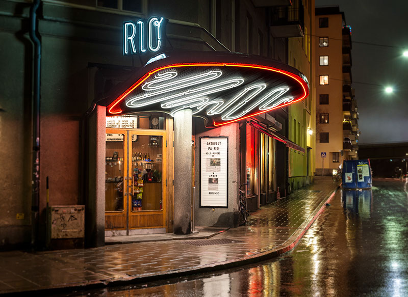

Upptäck Södermalm
Södermalm har något för alla. Här möts vackra utsikter, spännande kultur och roliga upplevelser. Här är tre tips på platser som du inte vill missa under ditt besök på södermalm.

🌿 Monteliusvägen
Monteliusvägen är en vacker promenadväg på Södermalm med fantastisk utsikt över Stockholm. Här kan du promenera längst vattnet, njuta av utsikten och se solen gå ner över staden.
📸 Fotografiska
Fotografiska är ett populärt museum på Södermalm där du kan upptäcka spännande fotoutställningar från både svenska och internationella fotografer. Museet ligger vid vattnet och erbjuder en inspirerande blandning av konst, kreativitet och kultur.

🎬 Bio Rio
Bio Rio är en charmig och historisk biograf vid Hornstull på Södermalm. Biografen har en mysig atmosfär och erbjuder ett varierat filmutbud med både nya filmer och klassiker. Bio Rio är ett perfekt besöksmål för dig som gillar film och kultur.